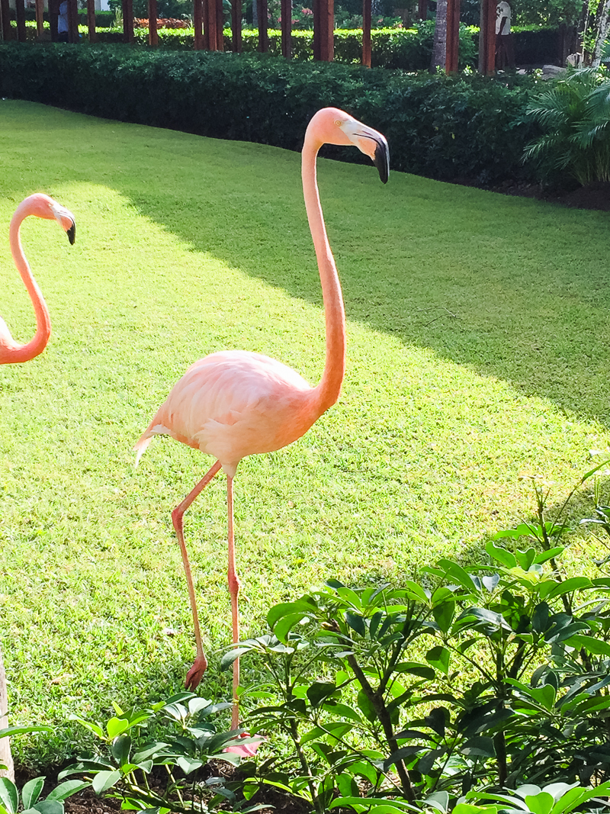
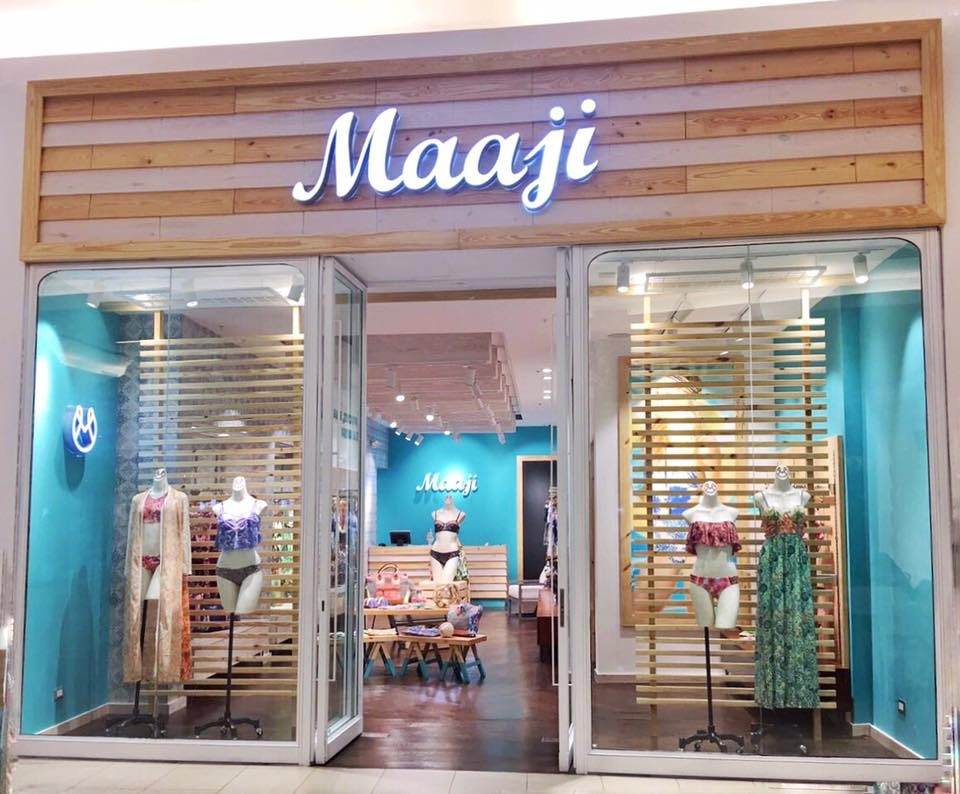

ATTENTION BEACH LOVERS: WE´VE FOUND PARADISE ON EARTH!
-Let the lavish greens and dreamy blues hypnotize you while exploring Dominican Republic, where we have just spread our #MAAJIC!
We highly recommend you get your bags ready and pack light so you can return with all the new MAAJI pieces that just arrived to our brand new store, which just opened in the heart of one of the most beautiful islands of the Caribbean: Dominican Republic!
Dominican Republic is for sure a top destination for nature and ocean lovers! And we would like to share our thoughts and ideas of where and how your adventure can be more fun and unforgettable!...(so take some notes #RealMermaids)!
This dreamy and paradisiac country, sharing the Island with Haiti; is not only the second largest and most diverse country in the Caribbean but also it’s the home of warmhearted and friendly people, and also surrounded by lushy greens, cities and streets filled with fascinating stories, making it all an enchanted trip in which you are in for a treat; to live and submerge into their natural habitat and culture! It is definitely a magical place to house one of our treasured stores!
“Dominican Republic: top destination for nature and ocean lovers!”
“Dominican Republic offers a fantastic combination of environments to capture your imagination and refresh the heart and mind”

Two of our beloved oceans surround this stunning place: The Atlantic and the Caribbean, making it a place with some of the world’s must-see and top beaches! And as if the breathtaking coastlines weren’t enough, you can also feed your adventurous soul by taking advantage of the numerous sports and fun-filled recreation and entertainment options accessible to you: from dancing and making your heart beat to the beat of merengue, to discovering and connecting a little with the past through outstanding ancient relics, or by simply indulging in what some of us love the most: delightful and delicious food! Or if you want to get a taste of pretty much a little bit of everything you should totally give a try to the fabulous ecotourism escapades: exploring the charmed national parks, hiking to the peaks of the mountain ranges (and believe us when we say the view is mind-blowing!) and top it all of by rejuvenating while in the rivers and spectacular beaches.
Some of the most beautiful beaches (we got the scoop from a local #RealMermaid) are, to name just a few:
- Playa Grande: a perfect mix of nature and water, complemented with splendid Resorts and golf courts.
- Playa Cayo Arena: also known as Cayo Paraiso, it’s a small island in front of the coasts of Puerto Plata in Punta Rucia. Like many have described it, it truly is a jewel from nature!
- Bahía de las Águilas: Located on the Southwestern coast and highly recommended to arrive by boat to really be able to take all its beauty in even more! And once you get there…snorkeling is a must!
- Las Terrenas: This white sand and dreamy clear water beach is located on the Northeast coast
- Playa Kite Beach: This beach is located in Cabarete, a town in Puerto Plata, and if you are a kite-surf fanatic you probably have heard or been to this place before. It is one of the kite-surfing meccas in the world and if you are more of the surfer kind, there is also Playa Encuentro just a few kilometers away. So definitely a wave-lovers kind of paradise!
Besides the beautiful beaches there’s a lot more to see and enjoy of the lively colorful country! Some of the things to keep in mind as –must do’s when visiting Dominican Republic are:
-When in Santo Domingo, the capital, walk (or dance your way through) the lively Zona Colonial. Which is the historic heart of the city and which served as the first place in the Americas for the Spaniards. It has also been declared a UNESCO World Heritage Site in 1990 (how amazing is that?!). It is formed by pretty streets and some of the oldest colonial buildings in the Western Hemisphere, including the majestic cathedral: Catedral Primada de América. Today you can also find museums, shops, restaurants and cafes, which many are still housed in colonial-era buildings, which make it all so much more magical and unique! Also make sure you stroll the “malecón”, the most iconic landmark in the city! Which on one side has the seaside and on the other has casinos, hotels and restaurants, making it the perfect promenade to escape from the heat while snacking on fresh coconut (which you know we are big fans of!) Then head to the Plaza Juan Baron where you can find yummy fast food and ice cream with places to seat, breath it all in and enjoy the city!
“If one thing we must all learn from Dominicans: to dance and enjoy life!”
“the home of warm and friendly people, astounding nature, fascinating history and rich culture!”
- As far as food comes, the soul of the country’s gastronomy scene is in Santo Domingo, where you can taste real authentic Dominican food as well as a variety of international dishes. You’ll definitely indulge in flavorful meals… whether you eat some fried Mahi Mahi with tostones (fried plantains), yaniqueques (big, fried johnny cakes) and avocado, enjoyed with an ice cold Presidente or a fresh fruit juice (you have to try these!) from carts along the sidewalks. Or give a try to some typical dishes at the local cafeterias or even the regions specialties done in a more fusion way at fine restaurants. You might want to try Pat’e Palo, located in the Colonial City for what we call Latin-American tapas and also El Meson de la Cava for not only really good food but also to surround yourself with a different ambience and experience, since you’ll be eating in a cave…for real! And if you want more of a casual local restaurant try Cafeteria El Conde.
-Even if you don’t consider yourself a dancer, trust us! You’ll be swooped and find yourself if not on the dance floor just enjoying and having a great time when going out at night! Music and dance are not only part of the culture but also an important way of enjoying life on a daily basis. If one thing we must all learn from Dominicans: to dance and enjoy life! Any day of the week, you can surely have a night out with live music, which can range from merengue bands to jazz concert nights, and also cultural shows at outdoor plazas to enjoy a starry night outside!
Dominican Republic has the power to capture your imagination and refresh you heart and mind! And your dreamer spirit and soul will be nurtured by the whimsical mixture of environments! As you can see there is so much to explore and enjoy, and the best part: all while being surrounded by revitalizing oceans, rivers and nature and also with warmhearted people who will transform your experience into a much more magical and unique one! We hope you enjoy its awe-inspiring landscape, go twirling and dancing, try some yummy local treats and certainly don´t forget to visit our MAAJICAL new opened store at CC Ágora, Local 330, Santo Domingo!
¨While visitng, head to our new MAAJICAL store at CC Agora, Santo Domingo¨